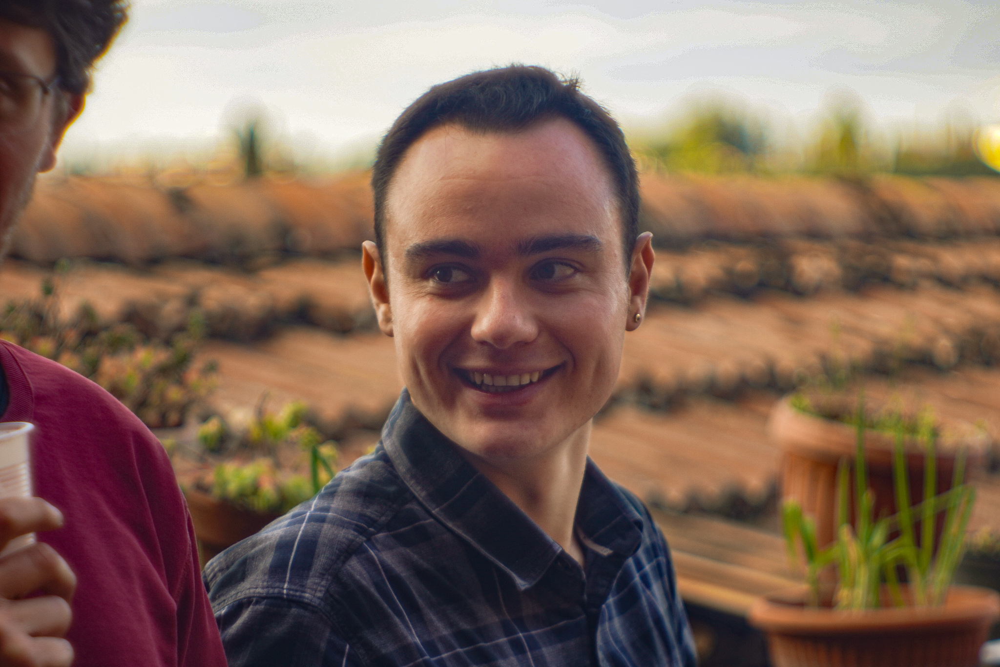

Contatti:
Dipartimento di Scienze Economiche, Università degli Studi di Bergamo.
Via dei Caniana 2, 24127
Bergamo
Bureau d'Economie Théorique et Appliquée,
Faculté des sciences économiques et de gestion,
Université de Strasbourg.
61 Avenue de la Forêt Noire, 67000 Strasbourg Cedex (FR)
Sono Assegnista di Ricerca in Politica Economica (SSD ECON-02/A) presso il Dipartimento di Scienze Economiche dell'Università degli Studi di Bergamo. Attualmente collaboro con la Prof. Elena Cefis al progetto "Innovazione, struttura finanziaria e resilienza: gli effetti della crisi COVID sulla sopravvivenza e performance delle imprese".
Presso l'Università di Bergamo, sono Tutor (Teaching Assistant) nei corsi di "Digital Transformation and Policies", "Economia e Politiche dell'Innovazione", e "Geoeconomia e Trasformazione Digitale", e membro del Center for Young and Economic Enterprise (CYFE).
Sono anche Ricercatore Affiliato (membre associé) del Bureau d'Economie Théorique et Appliquée (BETA) dell'Università di Strasburgo, Università della Lorena, CNRS.
Nel 2026 ho conseguito l'Abilitazione Scientifica Nazionale alle funzioni di professore universitario di II Fascia nel Settore Concorsuale 13/A2 - Politica Economica e nel Settore Concorsuale 13/A4 - Economia Applicata, e nel 2024 l'Abilitazione alle funzioni di Professore Associato (Maître de conférences) in Sciences Economiques (section 05) per il sistema di istruzione superiore francese.
Nel 2026 sono stato insignito insieme a E. Cefis dalla Prof. Maryann Feldman (Presidente dell'ISS) dell'International Joseph A. Schumpeter Society 2026 Schumpeter Prize, in riconoscimento del nostro articolo The direction of digital transformation: labor-saving versus time-saving trajectories in industrial dynamics.
Nel 2021 ho conseguito il titolo di Doctor Europaeus con una tesi sulla Stagnazione Secolare negli Stati Uniti, al termine del Joint Doctoral Programme in Economics delle Università Toscane: Università degli Studi di Siena (sede centrale), Università di Pisa e Università di Firenze (Università Partner).
Da marzo 2021 a novembre 2022 sono stato postdoc presso l’Università di Strasburgo, nell’ambito del progetto ANR “Artificial Intelligence in the Scientific System: Diffusion and impacts”, coordinato da Stefano Bianchini, André Lorentz (Université de Strasbourg) e Lorenzo Cassi (Paris School of Economics). Successivamente, da dicembre 2022 a novembre 2024, ho ottenuto un nuovo postdoc all'interno del gruppo ITI-MAKErS, coordinato da Amélie Barbier-Gauchard, per lo sviluppo di un progetto di ricerca autonomo dal titolo “European challenges in an evolutionary perspective”.
Sono stato Visiting Researcher presso la Business School dell'Università di Greenwich, la Leeds University Business School, e il Manchester Institute of Innovation Research (MIOIR).
I miei principali interessi di ricerca includono: economia dell’innovazione e del cambiamento tecnologico, economia evolutiva, modellistica ad agenti eterogenei interagenti, dinamiche industriali, economia della scienza, economia dei dati e dell’Intelligenza Artificiale, econometria dei dati panel e delle serie storiche.
Pubblicazioni più recenti:
Borsato, A. (2026). An Evolutionary Approach to Secular Stagnation. Cambridge University Press. https://doi.org/10.1017/9781009743433
Borsato, A., Cefis, E. (2026). The direction of digital transformation: labor-saving versus time-saving trajectories in industrial dynamics, Industrial and Corporate Change, https://doi.org/10.1093/icc/dtag034 . Pubblicazione insignita dello Schumpeter Prize
Borsato, A., Erasmo, V. & Lorentz, A. (2026). The University and the Prince: Public Funds Shaping University Trajectories. Ital Econ J. https://doi.org/10.1007/s40797-026-00372-7
Borsato, A., Erasmo, V. ( 2026). Balancing excellence and diversity in economics: rethinking research-funding allocation in the age of mainstream pluralism. J. Ind. Bus. Econ.. https://doi.org/10.1007/s40812-026-00397-0
Borsato, A., Llerena, P. (2026). The US university-industry link in the R&D of AI: Back to the origins?. J Evol Econ 36, 17 (2026). https://doi.org/10.1007/s00191-025-00940-7